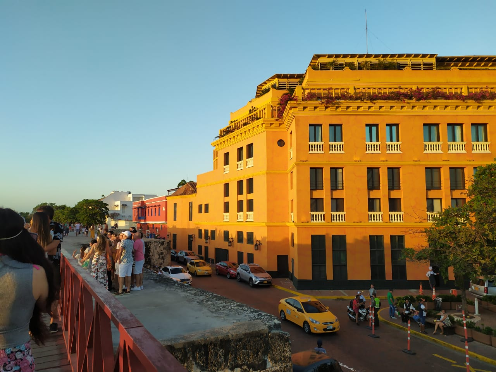
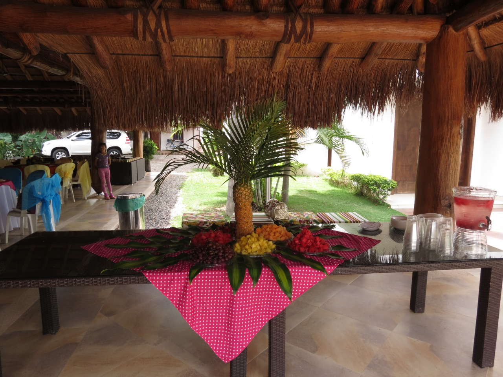
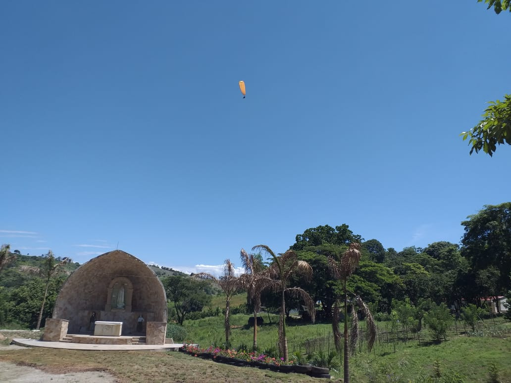
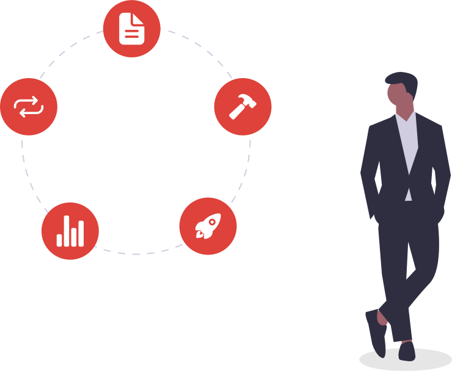
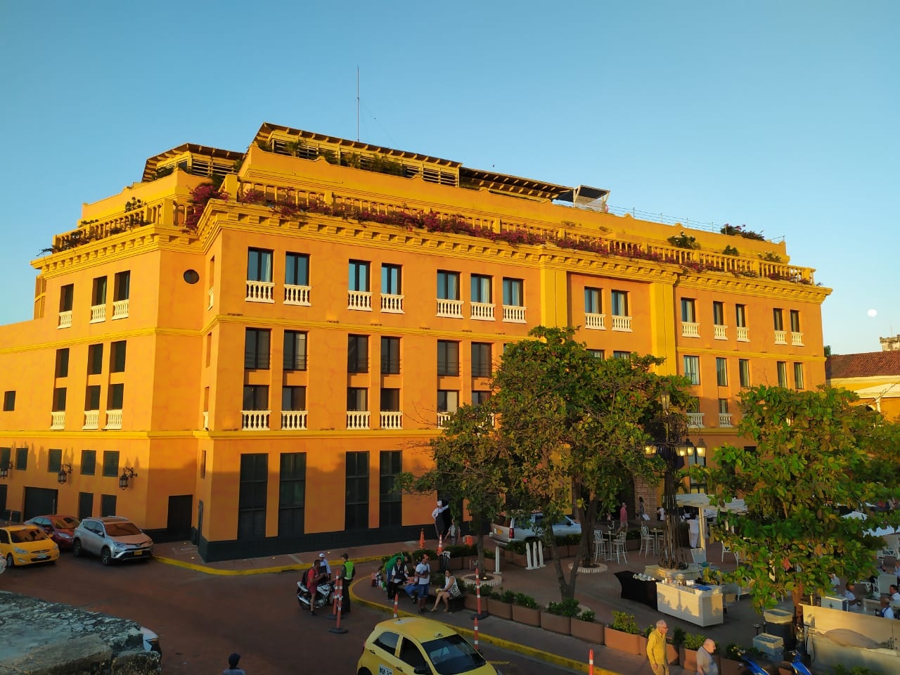
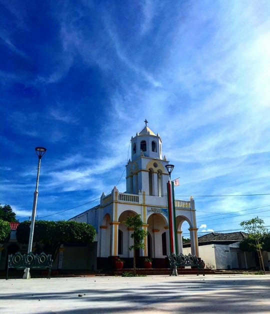
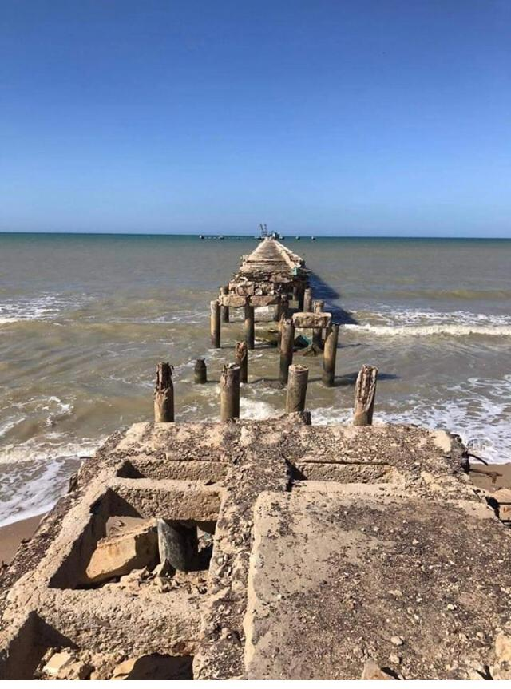

- 
- 

- 
¿Que es la ruta mokana?
El ser humano ha llegado a un momento crucial y de crisis que le permite reinventarse, crecer desde su interior y ser más empático con la sostenibilidad, la biodiversidad y una economía que le permita permanecer en el tiempo para que sea capaz de afrontar cualquier circunstancia, sin que esa empatía se fracture. El proyecto ruta Mokana propone como objeto retomar el conocimiento, la sabiduría ancestral y el intercambio de experiencias entre los directos sujetos de fortalecimiento, desarrollando en momentos de alta tecnología e innovación, practicas ancestrales que le permitan a las comunidades ser sostenibles en su entorno, la necesidad de multiplicar las huertas caseras con insumos nativos y regionales, para la producción y sostenibilidad de las familias involucradas; que les permite efectuar intercambios comerciales, trueques y generar al mismo tiempo bienes y servicios que permitan ese necesario intercambio cultural y económico que conlleva a la inserción social de las comunidades en desigualdad de derechos y vulnerabilidad.
intervención social, sostenible y equitativa de la ruta mokana

1Impacto
La ruta Mokana, por su propia naturaleza, influye en aspectos fundamentales del bienestar social. Sus inversiones, operaciones y cadenas de valor impactan en:
- Desarrollo de capital humano.
- Generación de empleo.
- Desarrollo de capital humano.
- Transferencia de tecnologías.
- Construcción de infraestructuras.
- Creación y distribución de productos y servicios para los consumidores..
2Un paso mas alla
El proyecto ruta Mokana se potencia un paso adelante, para identificar qué impactos negativos va a tener nuestra actividad, poder minimizarlos, y determinar los impactos positivos se podrían generar si actuase bajo un modelo de gestión y planificación de acción diferente, incorporando criterios de sostenibilidad y beneficio social. La ruta Mokana va dar un paso más allá del negocio convencional y busca impulsar de manera explícita nuevas actividades empresariales que generen beneficios sociales y económicos de manera equilibrada y sostenible.
Te esta esperando
Paisajes increibles
Gastronomias unicas
Lugares

Cartagena

Iglesia principal Manaure cesar

Cabo de la vela
